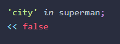

You can check for a properties existing with "in" operator:

There is also hasOwnProperty which will return true only if the object has the property (and it was not inherited from a super class)
For in for finding all properties
Chapter 6 - DOM
Any CSS property names that are separated by dashes must be written in camelCase notation, so the dash is removed and the next letter is capitalized because dashes are not legal characters in property names.
There is a function called getComputedStyle() that will retrieve all the style information of an element that is given as a parameter. This is a read-only property, so is only used for finding out information about the style of an element.
While it may seem useful to be able to edit the styles of elements on the fly like this, it is much better practice to dynamically change the class of an element and keep the relevant styles for each class in a separate stylesheet.
Chapter 7 - Events
The addEventListener() method can also be called without a node, in which case it is applied to the global object, usually the whole browser window.
Events are passed an event object, which has a type parameter to check the type if you use the same handler for multiple events.
You can get mouse coordinates from the event object.
Event.key for keyboard events tells you which key was pressed
shiftKey, ctrlKey, altKey, metaKey also
There are touch events, but click fires for both mouse click and touch so that should be used most often.
There are no swiping gestures, have to be handled with touch events manually.
removeEventListener to remove a handler that's no longer needed.
event.preventDefault() to stop the default behavior once the handler exits, though some events can't be cancelled (check cancellable property). Also be careful with this…might not be what you want. Users may get confused.
Default behavior is "bubbling", event.stopPropagation()